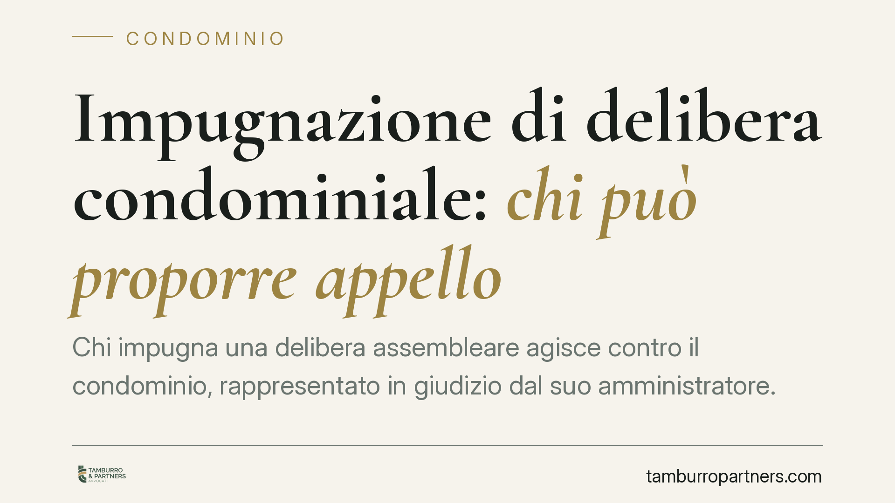

Impugnazione di delibera condominiale: chi può proporre appello
Chi impugna una delibera assembleare agisce contro il condominio, rappresentato in giudizio dal suo amministratore. Un recente orientamento della Cassazione ha ribadito un principio tecnico ma dalle ricadute pratiche notevoli: nel giudizio di impugnazione la legittimazione passiva spetta all'amministratore, e il singolo condomino può solo intervenire in via adesiva, senza proporre un appello autonomo contro la sentenza che annulla la delibera.

Il caso
Una delibera assembleare viene annullata dal giudice di primo grado. Una condomina, insoddisfatta della decisione, propone appello in proprio, senza il tramite dell'amministratore. La questione sottoposta alla Corte è precisa: un singolo condomino può impugnare autonomamente la sentenza che annulla una delibera, oppure quel potere resta in capo al condominio?
La risposta della Cassazione è negativa. Chi, nel giudizio di impugnazione della delibera, riveste la posizione di parte – e quindi può coltivare tutti i gradi del processo, appello compreso – è il condominio, non il singolo partecipante.
Inquadramento normativo
Il punto di partenza è l'art. 1131 cod. civ., che disciplina la rappresentanza dell'amministratore. Il comma 2 stabilisce che l'amministratore può essere convenuto in giudizio per qualunque azione concernente le parti comuni dell'edificio. Nel giudizio di impugnazione di una delibera assembleare – che è un'azione rivolta contro la decisione dell'organo collegiale – la legittimazione passiva, cioè la posizione di chi subisce la domanda, spetta quindi al condominio in persona dell'amministratore.
Questo non significa che il singolo condomino sia escluso dal processo. Egli può intervenire, ma la natura del suo intervento è decisiva. La giurisprudenza distingue tra:
- intervento adesivo dipendente: il terzo affianca una delle parti per sostenerne le ragioni, ma non introduce una domanda propria. La sua posizione è “dipendente” da quella della parte che sostiene;
- intervento adesivo autonomo (o litisconsortile): il terzo fa valere un diritto proprio nei confronti delle parti originarie, e assume una posizione processuale piena.
Il condomino che interviene nel giudizio di impugnazione della delibera si colloca nella prima categoria. Proprio perché la sua posizione è dipendente da quella del condominio, non può compiere atti che spettano alla parte principale: tra questi, la proposizione di un'impugnazione autonoma. Se il condominio, tramite l'amministratore, non appella, il condominio interveniente non può farlo al suo posto.
Va ricordato, inoltre, che l'art. 1137 cod. civ. fissa in trenta giorni il termine per impugnare le delibere *annullabili*. È un termine di decadenza: scaduto, il vizio non è più deducibile. La distinzione tra delibere nulle e annullabili resta quindi centrale anche nel ragionare sui poteri delle parti.
Implicazioni pratiche
Per l'amministratore, la pronuncia conferma un ruolo processuale pieno e una responsabilità precisa: è lui a decidere, previa autorizzazione o ratifica assembleare quando necessaria, se difendere la delibera e in che misura insistere nei gradi successivi. Un'inerzia nell'appello consolida la sentenza sfavorevole al condominio.
Per il singolo condomino contrario all'annullamento, il messaggio è altrettanto netto: non basta essere contrari alla sentenza per impugnarla. Chi vuole che la delibera resti in vita deve attivarsi per tempo nei confronti dell'amministratore, perché sia il condominio a coltivare l'impugnazione. Un appello proposto in proprio rischia la dichiarazione di inammissibilità, con aggravio di tempi e di spese.
Resta ferma la diversa ipotesi delle delibere nulle: la nullità, a differenza dell'annullabilità, può essere fatta valere da chiunque vi abbia interesse, senza termine di decadenza. Verificare in quale categoria ricade il vizio contestato è spesso il primo passaggio di qualsiasi strategia.
Cosa fare in concreto
- Qualifica il vizio: accerta se la delibera è nulla o semplicemente annullabile. Da questo dipendono termini, legittimazione e poteri processuali.
- Rispetta il termine dei 30 giorni per le delibere annullabili (art. 1137 cod. civ.): il calcolo decorre dall'approvazione per i presenti e dalla comunicazione per gli assenti.
- Coinvolgi tempestivamente l'amministratore: se vuoi difendere o impugnare in appello, la via corretta passa dal condominio, non dall'iniziativa individuale.
- Documenta le richieste rivolte all'amministratore, così da dimostrare di aver sollecitato l'azione nei termini.
- Valuta con un legale la posizione processuale prima di agire: un intervento o un'impugnazione proposti in forma errata possono essere dichiarati inammissibili.
Disclaimer
Contributo informativo a cura di Tamburro & Partners Avvocati. Non costituisce parere legale.
Ogni condominio ha una storia a sé.
Se gestisci un'amministrazione e vuoi un confronto su una specifica questione condominiale, scrivi allo studio. Ti rispondiamo entro un giorno lavorativo.